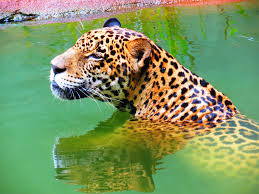
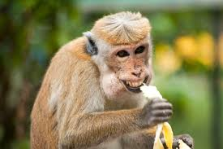
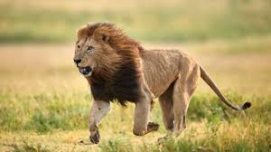
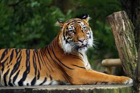
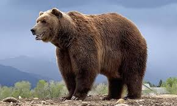
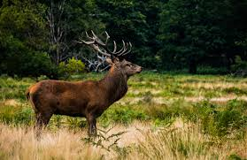

Onça Pintada
Maior felino das Américas e tem a mordida mais forte do mundo, podendo quebrar até cascos de tartaruga.

Macaco-rhesus
São nadadores incriveis, e ja foram vistos nadando quase um quilômetro.
Gorila
apesar do seu tamanho, em grande parte
eles são Pacíficos e gentis e
demonstram emoções como riso e tristeza.

Leão
Ele é considerado o Felino mais
Sociável pois, geralmente vivem
em grupos organizados.

Tigre
Eles possuem uma
Saliva Antisséptica com isso, eles lambem suas feridas
para desinfetá-las.

Urso Marrom
embora sejam caçadores hábeis, cerca de 80%
de sua dieta consiste em plantas, folhas, raizes, frutas e cogumelos.

Elefante da savana africana
A tromba é um orgão extremamente musculoso,
contendo cerca de 150.000 unidades musculares

Alce
Eles possuem uma resistência forte,
podendo vencer até um urso pardo(seu predador natural) .

Jacaré
é conhecido por ter a habilidade de
regenerar parte de suas caudas caso cortadas.